← Lesson 4: Deep Networks & Optimizers Lesson 5 / 6 · Vanishing Gradients & Init
Lesson 6: Callbacks & Tuning →
Lecture5 (deep_learning_part2_2.pdf, 38 หน้า) · 2603520 Deep Learning
Vanishing/Exploding Gradients, Weight Initialization และ Keras ในภาคปฏิบัติ
บทนี้ตอบคำถามที่ Lesson 3–4 ทิ้งไว้: ทำไม backprop ที่คูณหลายเทอมถึง "พัง" เมื่อเครือข่ายลึก และแก้ได้อย่างไร (weight initialization, batch/layer normalization) ก่อนจบด้วยการเขียนทุกอย่างเป็นโค้ด Keras จริง. ทุกสูตรมีตัวอย่างตัวเลขทีละขั้น.
ก่อนเริ่ม — 2 ศัพท์ทางสถิติที่ใช้ในบทนี้
Mean (ค่าเฉลี่ย) \(\mu\) และ Variance (ความแปรปรวน) \(\sigma^2\) = ค่าเฉลี่ยของ (ระยะห่างจากค่าเฉลี่ย)² — ยิ่งข้อมูลกระจายกว้าง variance ยิ่งสูง; ส่วนเบี่ยงเบนมาตรฐาน \(\sigma = \sqrt{\sigma^2}\)\(N(0,1)\) = การแจกแจงแบบระฆัง mean 0 variance 1; fan_in / fan_out = จำนวน node ที่ส่งเข้า / ส่งออกของ layer นั้น (เช่น layer \(784\to16\): fan_in = 784, fan_out = 16)
1. Vanishing/Exploding Gradients: ผลสืบเนื่องจาก Chain Rule ที่ยาวเกินไป
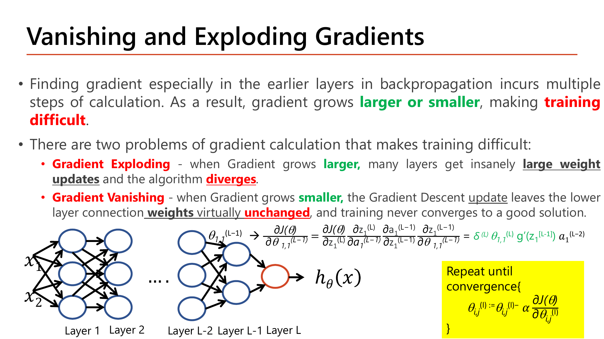
Slide: Vanishing and Exploding Gradients — ที่มาจากโซ่ chain rule ที่ยาว (Lecture5.pdf, p.1)
ย้อนสูตรจาก Lesson 4 §1: $$\dfrac{\partial J}{\partial\theta_{1,1}^{[L-1]}} = \delta^{[L]}\,\theta_{1,1}^{[L]}\,g'(z_1^{[L-1]})\,a_1^{[L-2]}$$. ถ้าเครือข่ายมี 10 layer การหา gradient ของ layer แรกสุดต้องคูณตัวคูณต่อกันประมาณ 10 ตัว (\(\theta\) กับ \(g'\) ของแต่ละ layer ที่ผ่าน).
Exploding: ถ้าตัวคูณ \(>1\) (เช่น weight เริ่มต้นใหญ่) ผลคูณโตแบบทวีคูณ ⇒ อัปเดต weight กระโดดจนไม่ลู่เข้า (สไลด์: many layers get insanely large weight updates and the algorithm diverges)Vanishing: ถ้าตัวคูณ \(<1\) (เช่น \(g'\) ของ sigmoid สูงสุด 0.25) ผลคูณหดเป็นศูนย์ ⇒ weight ของ layer ล่างแทบไม่ขยับ (สไลด์: training never converges to a good solution)
คำนวณ: ตัวคูณเล็กน้อยกว่า 1 หรือมากกว่า 1 นิดเดียว พอคูณซ้ำก็ต่างกันมหาศาล
sigmoid ต่อกัน 10 layer (ตัวคูณสูงสุดของ \(g'\) คือ 0.25)
$$0.25^{10} = 9.5\times10^{-7}$$
gradient ของ layer แรกเล็กลงเกือบล้านเท่า
ตัวคูณ 0.9 ต่อ layer (ดูไม่แย่)
$$0.9^{10} = 0.349\ (\text{ลดลง }65\%),\qquad 0.9^{50} = 0.00515\ (\text{ลดลง }99.5\%)$$ตัวคูณ 1.1 ต่อ layer (ดูไม่มาก)
$$1.1^{10} = 2.59,\qquad 1.1^{50} = 117$$
ตัวคูณเบี่ยงจาก 1 แค่ 10% แต่ลึก 50 layer ก็ต่างกัน 2 ตำแหน่งทศนิยม — ความลึกทำให้ปัญหาโตแบบเลขชี้กำลัง (เหตุผลเดียวกับ EWA ใน Lesson 4 §4 ที่ \(\beta\) คูณตัวเองซ้ำ).
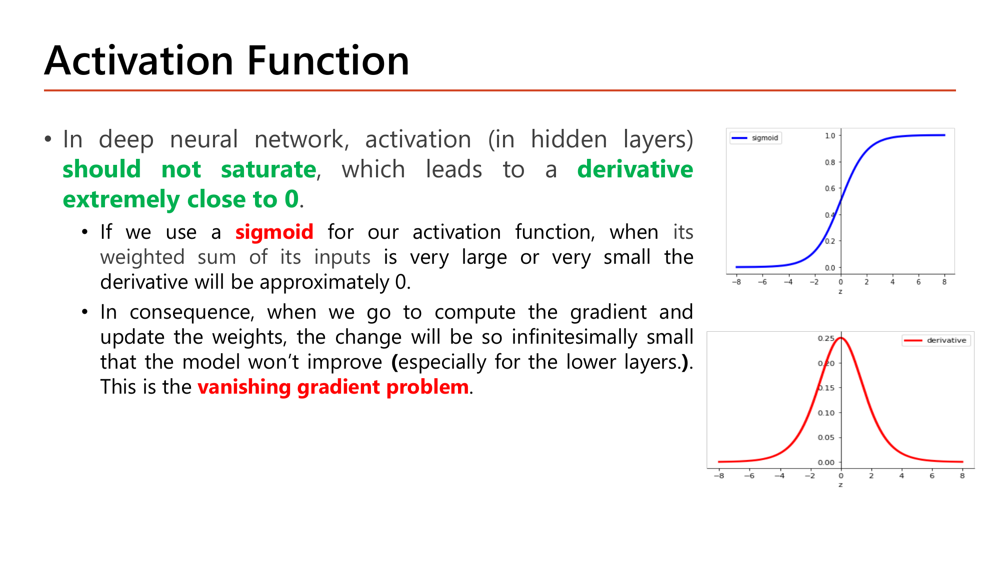
Slide: Activation Function — ปัญหา Saturation ของ sigmoid (Lecture5.pdf, p.2)
อีกสาเหตุคือ saturation : ถ้า \(z\) ห่างจาก 0 มาก sigmoid แบนสนิท (\(g'(z)\approx0\) จริงๆ ไม่ใช่แค่น้อยกว่า 1). ค่าจาก Lesson 3 §5: \(g'(\pm4)=0.0177\), \(g'(\pm8)=0.000335\). ดังนั้น ทั้ง "ตัวคูณ \(\le0.25\)" และ "ความชันหายตอน saturate" ทำให้ sigmoid/tanh เสี่ยง vanishing.
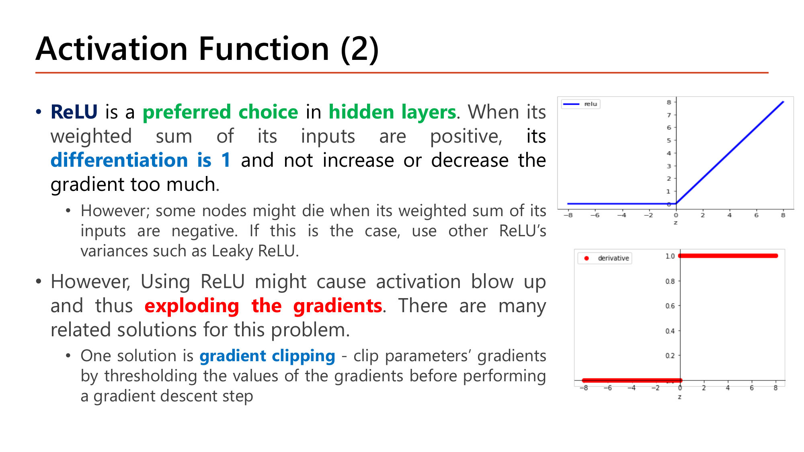
Slide: Activation Function (2) — ReLU และ Gradient Clipping (Lecture5, p.3)
ทางแก้ที่สไลด์หน้า 3 ให้: ใช้ ReLU เป็น hidden layer (อนุพันธ์ = 1 เมื่อผลรวมเป็นบวก จึงไม่ทำให้ gradient หดหรือขยาย). แต่ ReLU มีข้อเสีย: node อาจ "ตาย" เมื่อผลรวมเป็นลบ (ใช้ Leaky ReLU แทน) และ activation บวกไม่มีขอบเขตบนอาจ blow up ทำให้ gradient ระเบิด — ทางแก้หนึ่งคือ gradient clipping : ตัดค่า gradient ด้วย threshold ก่อนทำก้าว gradient descent.
คำนวณ: gradient clipping 2 แบบ กับ gradient \(g = [3,\ -7,\ 0.5]\)
Clip by value (threshold \(c=1\)): จำกัดแต่ละสมาชิกให้อยู่ใน \([-1,1]\)
$$g' = [\min(3,1),\ \max(-7,-1),\ 0.5] = [1,\ -1,\ 0.5]$$
ทิศทางเปลี่ยน (สัดส่วนระหว่างสมาชิกเพี้ยน)
Clip by norm (threshold \(c=5\)): หา \(\|g\|\) ก่อน
$$\|g\| = \sqrt{9+49+0.25} = 7.63 > 5\ \Rightarrow\ g' = g\cdot\frac{5}{7.63} = [1.97,\ -4.59,\ 0.33]$$
\(\|g'\|=5\) และทิศทางเดิม (แค่หดความยาว)
ทั้งสองแบบกันไม่ให้ก้าวใหญ่เกินจนระเบิด: by value ง่ายแต่เปลี่ยนทิศ, by norm รักษาทิศทาง. (Keras: clipvalue / clipnorm ใน optimizer)
กลไกที่ต้องอธิบายได้
ทำไมต้องมี
ปรากฏการณ์นี้เป็นผลคูณสะสม (product) ไม่ใช่ผลรวม (sum) — ตัวคูณเบี่ยงจาก 1 นิดเดียว พอคูณหลายสิบรอบก็ต่างกันเป็นเลขชี้กำลัง ต่างจากผลรวมที่เบี่ยงเบนไม่เร็วขนาดนี้.
เปลี่ยนแล้วเกิดอะไร
ตัวคูณเฉลี่ย 0.9 (แทน 0.25): 10 layer ⇒ 0.349, 50 layer ⇒ 0.00515 — "จำนวน layer" ทำให้ปัญหารุนแรงแบบทวีคูณ แม้ค่าต่อ layer ดูไม่แย่.
เชื่อมกับ
การคูณสะสมเดียวกับ EWA ใน Lesson 4 §4 ("คูณเลขใกล้ 1 ซ้ำหลายรอบ") และตัวอย่างโซ่ 3 layer ใน Lesson 4 §1 (gradient layer แรกเล็กกว่า layer สุดท้าย 15.7 เท่า).
คำถาม 1 Vanishing Gradient
ทำไมเครือข่ายที่ใช้ sigmoid ทุก layer ถึงเสี่ยงเกิด Vanishing Gradient มากกว่าเครือข่ายที่ใช้ ReLU?
เพราะอนุพันธ์ sigmoid สูงสุดแค่ 0.25 และเข้าใกล้ 0 เมื่อ saturate ต่างจาก ReLU ที่คงที่ 1
เพราะ sigmoid ใช้ได้กับ output layer เท่านั้น ไม่สามารถใช้กับ hidden layer ได้เลย
เพราะ sigmoid ต้องการค่า learning rate ที่สูงกว่า ReLU มากในทุกกรณีของการเทรน
เพราะ sigmoid ไม่สามารถหาอนุพันธ์ได้เลยในทางคณิตศาสตร์เมื่อเครือข่ายมีหลาย layer
2. Weight Initialization: ทำไม "สุ่มเฉยๆ" ไม่พอ
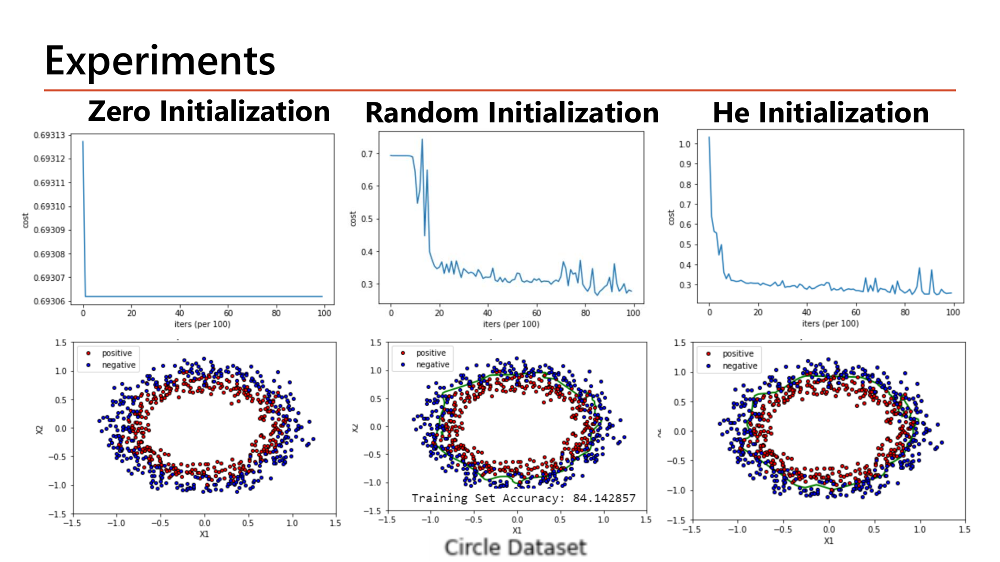
Slide: Experiments — Zero vs Random vs He Initialization บน Circle Dataset (Lecture5, p.7)
ดูผลลัพธ์ก่อน แล้วค่อยอธิบาย: ในสไลด์หน้า 7 การตั้ง weight เป็น 0 ทั้งหมด ทำให้ cost ค้างที่ประมาณ 0.6931 ตลอดการเทรนและไม่เกิด decision boundary; Random ธรรมดาใช้เวลานานกว่าจะเริ่มลด (cost อยู่แถว 0.69 ช่วงแรก) แล้วจบที่ train accuracy 84.14%; He ลดเร็วตั้งแต่ต้น. เลข 0.6931 คือ \(\ln 2\) (cost ของโมเดลที่ทำนาย 0.5 ทุกตัวอย่าง — Lesson 1 §6).
2.1 ทำไม weight เท่ากันหมด (เช่น 0) ถึงพัง — symmetry
สไลด์หน้า 4: weight ต้องสุ่มและไม่เหมือนกัน เพื่อไม่ให้ node ซ้ำซ้อน. ดูด้วยตัวเลข:
คำนวณ: zero init ในเครือข่าย 2 → 2 → 1 (sigmoid, \(x=(1,2)\), \(y=1\), weight/bias ทุกตัว = 0)
Forward
$$z^{[1]}_1 = z^{[1]}_2 = 0\ \Rightarrow\ a^{[1]}_1 = a^{[1]}_2 = g(0) = 0.5,\qquad z^{[2]} = 0\ \Rightarrow\ h = 0.5$$
cost \(= -\ln 0.5 = 0.693\) ✓ (ตรงกับที่สไลด์ค้าง)
Backward: \(\delta\) ที่ output
$$\delta^{[2]} = 0.5 - 1 = -0.5$$\(\delta\) ของ hidden = \(\theta^{[2]}_{1j}\,\delta^{[2]}\,g'\) โดย \(\theta^{[2]}=0\)
$$\delta^{[1]}_1 = 0\times(-0.5)\times0.25 = 0,\qquad \delta^{[1]}_2 = 0$$
gradient ของ \(\theta^{[1]}\) ทั้งหมด = 0 ⇒ ไม่ขยับ
gradient ของ \(\theta^{[2]} = \delta^{[2]}\cdot a^{[1]}\)
$$\partial J/\partial\theta^{[2]}_{11} = -0.5\times0.5 = -0.25,\qquad \partial J/\partial\theta^{[2]}_{12} = -0.25$$
เท่ากันทั้งสองตัว ⇒ หลังอัปเดต \(\theta^{[2]}_{11} = \theta^{[2]}_{12}\) ≠ 0 แต่ยังเท่ากัน
รอบถัดไป: hidden ทั้งสองตัวได้ \(\delta\) เท่ากัน อัปเดตเท่ากัน ...
hidden 2 node ทำงานเหมือนตัวเดียวกัน ตลอดกาล (ไม่มีวัน "แตกต่าง") — แม้มี hidden 100 node ก็เท่ากับมี 1 node. การสุ่ม \(\theta\) ให้ต่างกันเรียกว่า symmetry breaking .
2.2 ทำไม "สุ่มแล้ว" ยังไม่พอ — ขนาด (variance) สำคัญ
สไลด์หน้า 4 เตือนว่าผลจากหลักฐาน: จะสุ่มจาก uniform หรือ Gaussian ไม่ค่อยต่าง แต่ขนาดของ weight เริ่มต้น ส่งผลต่อทั้งความคืบหน้าของการ optimize และการ generalize.
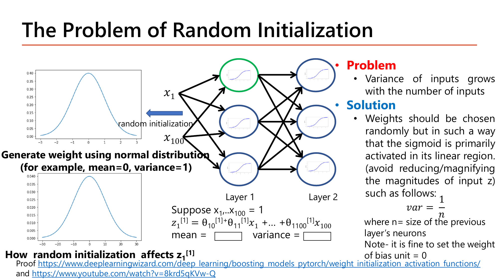
Slide: The Problem of Random Initialization — ตัวอย่างคำนวณ mean, variance ของ z (Lecture5.pdf, p.5)
คำนวณ: โจทย์ที่สไลด์เว้นไว้ — mean และ variance ของ \(z_1^{[1]}\) เมื่อมี 100 input
\(x_1=\dots=x_{100}=1\), weight \(\theta_i \sim N(0,1)\) อิสระกัน; \(z = \theta_0 + \sum_{i=1}^{100}\theta_i x_i\) (ให้ bias \(\theta_0\) = 0 เพื่อความสั้น)
mean
$$E[z] = \sum_i E[\theta_i]\,x_i = 100\times0\times1 = 0$$variance ของผลรวมตัวแปรอิสระ = ผลรวม variance
$$\operatorname{Var}(z) = \sum_{i=1}^{100}\operatorname{Var}(\theta_i)\,x_i^2 = 100\times1\times1^2 = 100$$ส่วนเบี่ยงเบนมาตรฐาน
$$\sigma_z = \sqrt{100} = 10$$
z กระจายกว้าง ±10 (เทียบกับ input ที่เป็น 1) ⇒ ตกเขต saturation ของ sigmoid (\(g'(\pm10)\approx0.00005\)) ตั้งแต่ layer แรก. สไลด์: variance โตขึ้นตามจำนวน input.
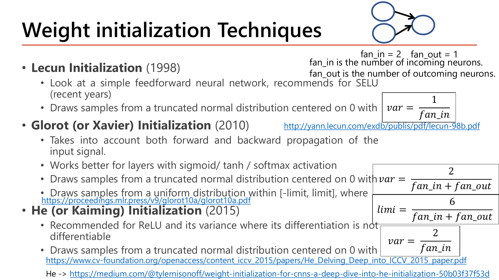
Slide: Weight Initialization Techniques — สูตร variance ของแต่ละวิธี (Lecture5.pdf, p.6)
ทั้ง 3 วิธีแก้ปัญหาเดียวกัน — คุม \(\operatorname{Var}(\theta)\) ให้ตามจำนวน input/output:
วิธี \(\operatorname{Var}(\theta)\) เหมาะกับ LeCun (1998) \(\dfrac{1}{\text{fan\_in}}\) SELU Xavier / Glorot (2010) \(\dfrac{2}{\text{fan\_in}+\text{fan\_out}}\) sigmoid / tanh / softmax He / Kaiming (2015) \(\dfrac{2}{\text{fan\_in}}\) ReLU และตระกูล
พิสูจน์ที่มา: ทำไม \(\operatorname{Var}(\theta) = 2/\text{fan\_in}\) สำหรับ ReLU
ให้ layer มี \(n=\)fan_in ตัว, input \(a_i\) เป็นอิสระ, weight \(\theta_i\) มี mean 0 และ variance \(\sigma_\theta^2\)
variance ของ \(z\) ใน layer ถัดไป
$$\operatorname{Var}(z') = n\,\sigma_\theta^2\,E[a^2]$$activation ที่ผ่าน ReLU: ครึ่งหนึ่งของ \(z\) เป็นลบถูกตัดเป็น 0 ⇒ \(E[a^2] = \tfrac12\operatorname{Var}(z)\)
$$\operatorname{Var}(z') = n\,\sigma_\theta^2\cdot\tfrac12\operatorname{Var}(z)$$ต้องการให้ variance คงที่: \(\operatorname{Var}(z')=\operatorname{Var}(z)\)
$$n\,\sigma_\theta^2\cdot\tfrac12 = 1\ \Rightarrow\ \sigma_\theta^2 = \frac{2}{n} = \frac{2}{\text{fan\_in}}$$
เลข 2 ในตัวเศษ (He) ชดเชยที่ ReLU ตัดครึ่งลบทิ้ง. ถ้าใช้ LeCun \(1/n\) กับ ReLU ตัวคูณต่อ layer จะเป็น \(\tfrac12\) ⇒ variance หดครึ่งทุก layer. Xavier ใช้ค่าเฉลี่ยของเงื่อนไข forward (\(1/\text{fan\_in}\)) และ backward (\(1/\text{fan\_out}\)) จึงเป็น \(2/(\text{fan\_in}+\text{fan\_out})\).
คำนวณ: variance ของ \(z\) ผ่าน 10 layer ReLU กว้าง 100 (ผลจากการจำลองด้วยคอมพิวเตอร์)
weight \(N(0,1)\) ธรรมดา: ตัวคูณต่อ layer \(= n\sigma_\theta^2/2 = 100\times1/2 = 50\)
$$\operatorname{Var}(z):\ 99.5\ \to\ 5{,}054\ \to\ 237{,}844\ \to\ \dots\ \to\ 3.8\times10^{17}\ (\text{layer 10})$$
ระเบิดเป็นเลขชี้กำลัง (exploding)
He: \(\sigma_\theta^2 = 2/100 = 0.02\) (\(\sigma_\theta = 0.141\))
$$\operatorname{Var}(z):\ 2.0\ \to\ 1.98\ \to\ 2.06\ \to\ \dots\ \to\ 1.96\ (\text{layer 10})$$
คงที่ทุก layer
LeCun \(1/n\) กับ ReLU (ผิดคู่): ตัวคูณ \(\tfrac12\)
$$\operatorname{Var}(z):\ 1.0\ \to\ 0.49\ \to\ 0.29\ \to\ \dots\ \to\ 0.001\ (\text{layer 10})$$
หดหาย (vanishing)
กฎจำง่ายจากสไลด์หน้า 8: ReLU / Leaky ReLU ใช้ He, tanh / sigmoid ใช้ Xavier — ใน Keras: kernel_initializer='he_normal' / 'glorot_uniform' (ค่า default ของ Dense).
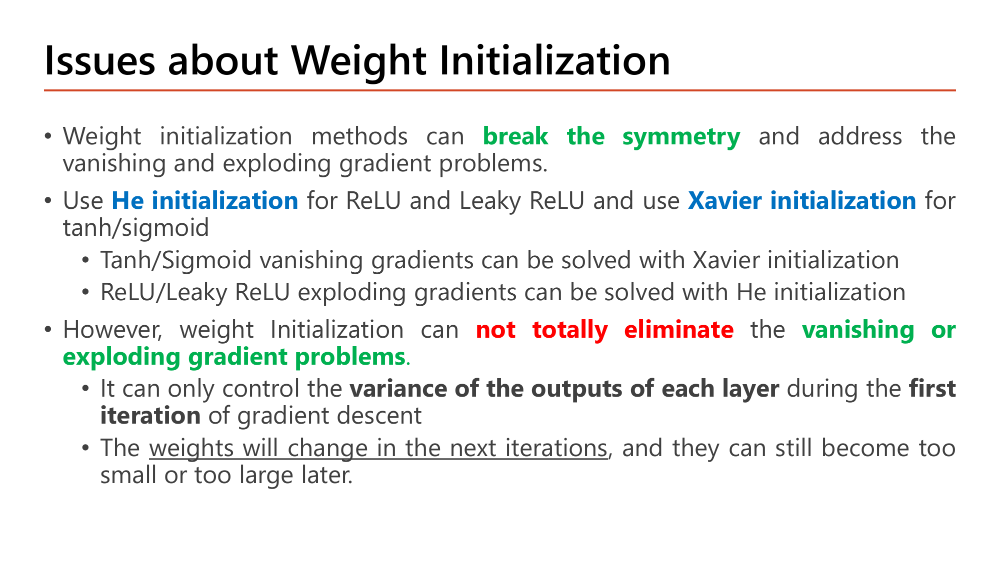
Slide: Issues about Weight Initialization (Lecture5, p.8)
ข้อจำกัด (สไลด์หน้า 8): initialization ช่วย break symmetry และคุม variance ในรอบแรกของ gradient descent เท่านั้น — เมื่อ weight เปลี่ยนในรอบถัดไปก็ยังกลับไปเล็กหรือใหญ่เกินได้อีก จึงไม่ได้กำจัดปัญหา vanishing/exploding ให้สิ้นซาก (จึงต้องมี Batch Normalization ใน §3).
กลไกที่ต้องอธิบายได้
ทำไมต้องมี
ทำไมต้องคุม variance (ไม่ใช่ mean)? เพราะ mean = 0 อยู่แล้วจากการสุ่มสมมาตร แต่ variance สะสมทุกเทอมที่บวกกัน (เป็นบวกเสมอ ไม่หักล้าง) จึงโตตามจำนวน input จริง — ถ้าไม่คุม \(z\) กระจายกว้างขึ้นทุก layer ที่ลึกขึ้น.
เปลี่ยนแล้วเกิดอะไร
He กับ fan_in = 100: \(\operatorname{Var}(\theta)=2/100=0.02\) ⇒ \(\operatorname{Var}(z)=100\times0.02\times1=2\) และคงที่ไม่ว่า fan_in เท่าไร (เพราะ \(\tfrac{2}{n}\times n = 2\) เสมอ) ต่างจาก \(N(0,1)\) ที่ variance โตเป็น 100 ตามจำนวน input.
เชื่อมกับ
คำถามใน §1 โดยตรง: คุม variance ให้คงที่ทุก layer ⇒ z ไม่หลุดเข้า saturation ตั้งแต่ layer แรก ⇒ ตัวคูณ \(g'\) ไม่หด; และการทดลอง Lesson 6 §7 (RandomUniform(0,1) ทำให้ tanh อิ่มตัว).
คำถาม 2 Weight Init Variance
มี 100 input ทุกตัวเท่ากับ 1 และ weight สุ่มจาก N(0,1) อิสระกัน variance ของ z₁⁽¹⁾ = Σθᵢxᵢ (รวม 100 เทอม) เท่ากับเท่าไหร่?
1 เพราะ variance ของ weight แต่ละตัวเท่ากับ 1 อยู่แล้วไม่เปลี่ยนแปลงตามจำนวนเทอม
100 เพราะ variance ของผลรวมตัวแปรสุ่มอิสระเท่ากับผลรวม variance ของแต่ละเทอม (1×100)
10 เพราะต้องหารด้วยรากที่สองของจำนวน input ก่อนนำมาบวกกันตามสูตรมาตรฐาน
0 เพราะ mean ของแต่ละ weight เท่ากับ 0 ทำให้ variance ของผลรวมเป็น 0 ไปด้วย
คำถาม 3 He vs Xavier Init
ตามหลักการที่สไลด์แนะนำ ควรใช้ Weight Initialization แบบใดกับ hidden layer ที่ใช้ ReLU เป็น activation function?
He (Kaiming) Initialization เพราะออกแบบมาสำหรับ ReLU และตัวแปรของมันโดยเฉพาะ (var=2/fan_in)
Xavier (Glorot) Initialization เพราะใช้ได้กับทุก activation function เท่าเทียมกันเสมอ
LeCun Initialization เพราะเป็นวิธีที่เก่าที่สุดจึงเหมาะกับ activation function ทุกแบบ
ไม่ต้องเลือกวิธีใดเป็นพิเศษ เพราะ ReLU ไม่ได้รับผลกระทบจากการเลือก initialization เลย
3. Batch Normalization: Normalize z ก่อนเข้า Activation ทุก Layer
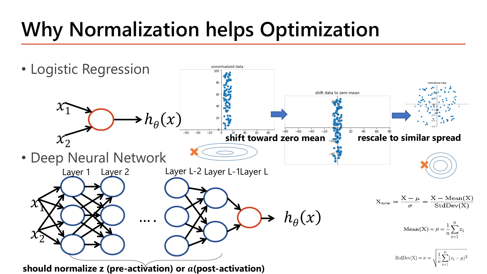
Slide: Why Normalization helps Optimization (Lecture5, p.9)
ทำไม normalization ช่วย optimize (สไลด์หน้า 9): ใน logistic regression ข้อมูลที่ไม่ normalize (แกน y ถึง 100 แกน x แค่ ±15) ทำให้ contour ของ cost เป็นวงรีแคบยาว gradient descent zig-zag; หลัง "shift ให้ mean = 0" และ "rescale ให้กระจายใกล้กัน" contour กลม เดินตรงเข้าหาจุดต่ำสุด — เหมือน feature scaling ใน Lesson 1 §4 (สูตร z-score \(x_{\text{new}}=\frac{x-\mu}{\sigma}\)). ใน deep network แต่ละ layer ได้ input จาก layer ก่อนหน้า จึงควร normalize \(z\) (pre-activation) หรือ \(a\) (post-activation) ของทุก layer เช่นกัน.
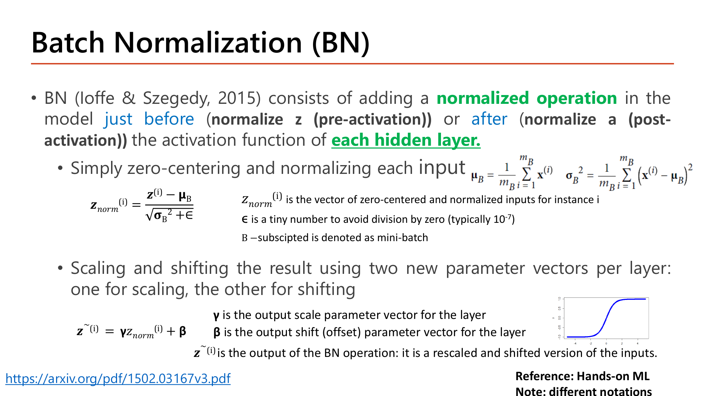
Slide: Batch Normalization (BN) — สูตร normalize แล้ว scale/shift (Lecture5.pdf, p.12)
BN (Ioffe & Szegedy, 2015) ทำ 2 ขั้นในทุก hidden layer โดยใช้สถิติของmini-batch ปัจจุบัน \(B\):
$$\mu_B = \frac{1}{m_B}\sum_i z^{(i)},\quad \sigma_B^2 = \frac{1}{m_B}\sum_i \left(z^{(i)}-\mu_B\right)^2,\quad z_{\text{norm}}^{(i)} = \frac{z^{(i)}-\mu_B}{\sqrt{\sigma_B^2+\epsilon}},\quad \tilde z^{(i)} = \gamma\,z_{\text{norm}}^{(i)} + \beta$$
ขั้น 1: ทำให้ mean = 0, variance = 1 (ε ≈ 10⁻⁷ กันหารด้วย 0). ขั้น 2: คูณ \(\gamma\) บวก \(\beta\) — สองตัวนี้เป็นพารามิเตอร์ที่เรียนรู้ได้ (ต่อ 1 node) เพื่อให้เครือข่ายเลือกได้ว่าจะคง normalization ไว้เท่าไร
คำนวณ: BN ของ 1 neuron ใน mini-batch 4 ตัวอย่าง (\(\gamma=1.5,\ \beta=0.5\), ละ \(\epsilon\))
\(z = [2,\ 4,\ 6,\ 8]\)
mean
$$\mu_B = \frac{2+4+6+8}{4} = 5$$variance
$$\sigma_B^2 = \frac{(-3)^2+(-1)^2+1^2+3^2}{4} = 5,\qquad \sqrt{\sigma_B^2}=2.236$$normalize
$$z_{\text{norm}} = \left[\tfrac{-3}{2.236},\ \tfrac{-1}{2.236},\ \tfrac{1}{2.236},\ \tfrac{3}{2.236}\right] = [-1.342,\ -0.447,\ 0.447,\ 1.342]$$
mean = 0, variance = 1 ✓
scale & shift: \(\tilde z = 1.5\,z_{\text{norm}} + 0.5\)
$$\tilde z = [-1.512,\ -0.171,\ 1.171,\ 2.512]$$
ขั้น 2 ให้เครือข่ายเลือกได้: ถ้าเรียนได้ \(\gamma=\sqrt{\sigma_B^2}\) และ \(\beta=\mu_B\) จะได้ \(\tilde z = z\) กลับมาเหมือนเดิม (ปิด BN); ถ้าไม่มีขั้น 2 ทุก layer ถูกบีบให้มี distribution เดียวกันตายตัว ซึ่งไม่เหมาะกับทุกงาน (เช่น sigmoid ที่ต้องการ z ไม่ชิด 0 เกินไป).
3.1 วาง BN ตรงไหน (สไลด์หน้า 13–14)
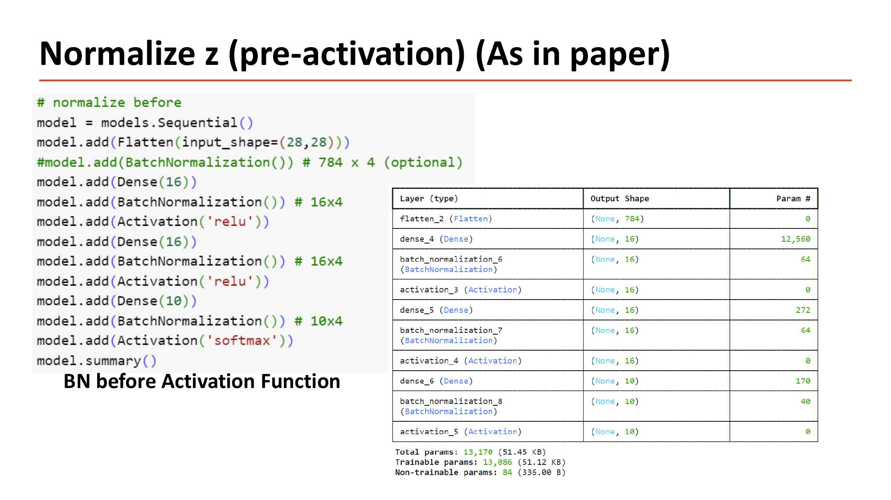
Slide: Normalize z (pre-activation) — BN ก่อน Activation พร้อม model.summary (Lecture5, p.13)
สองตำแหน่งที่ทำได้: normalize z (BN ก่อน activation — แบบในเปเปอร์: Dense → BatchNormalization → Activation) และ normalize a (BN หลัง activation: Dense(activation='relu') → BatchNormalization). สไลด์หน้า 14 ระบุด้วยว่าถ้าใส่ BN เป็น layer แรกสุด มักไม่ต้อง standardize ข้อมูลเทรนเอง.
คำนวณ: BN มีพารามิเตอร์กี่ตัว — อ่านจาก model.summary ในสไลด์หน้า 13
โมเดล 784 → 16 → 16 → 10, BN ก่อน activation ทุก layer (ไม่มี BN ที่ input)
BN 1 layer ที่มี \(n\) node เก็บ 4 ชุดต่อ node
\(\gamma\) (scale), \(\beta\) (shift) — trainable ; และ moving mean, moving variance (สำหรับตอน test) — non-trainable
$$\text{พารามิเตอร์ของ BN} = 4n$$แต่ละ BN layer
$$n=16:\ 4\times16 = 64,\qquad n=16:\ 64,\qquad n=10:\ 4\times10 = 40$$
ตรงกับ 64, 64, 40 ในสไลด์
รวมทั้งโมเดล
$$\text{Total} = 13{,}002 + (64+64+40) = 13{,}170$$
$$\text{Trainable} = 13{,}002 + 2(16+16+10) = 13{,}086,\qquad \text{Non-trainable} = 2(16+16+10) = 84$$
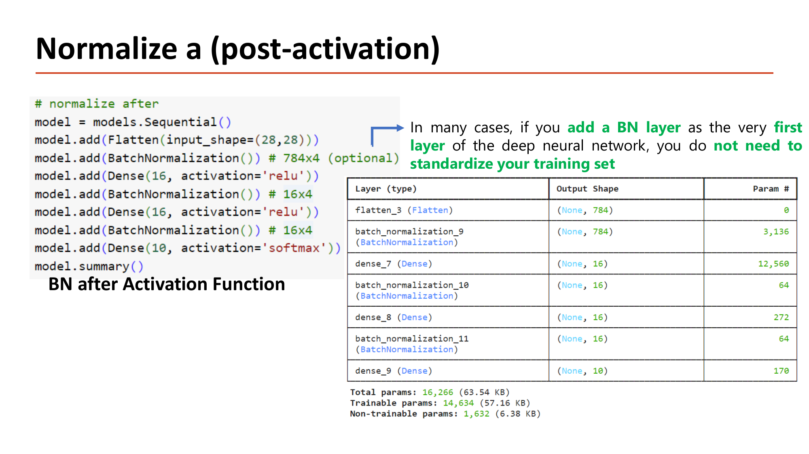
Slide: Normalize a (post-activation) — BN หลัง Activation พร้อม model.summary (Lecture5, p.14)
เช็คด้วยกฎเดียวกันกับโมเดลหน้า 14 (มี BN ที่ input 784 ตัวด้วย): BN แรก \(4\times784 = 3{,}136\) ✓; total \(=13{,}002+3{,}136+64+64 = 16{,}266\) ✓; non-trainable \(=2(784+16+16) = 1{,}632\) ✓; trainable \(=16{,}266-1{,}632 = 14{,}634\) ✓.
3.2 ตอน Train เทียบตอน Test (สไลด์หน้า 15)
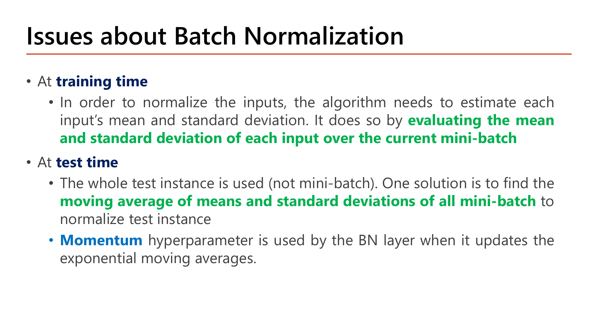
Slide: Issues about Batch Normalization — train vs test (Lecture5, p.15)
ตอน train \(\mu_B,\sigma_B^2\) คำนวณจาก mini-batch ปัจจุบัน แต่ตอน test ไม่มี mini-batch (อาจมีแค่ 1 ตัวอย่าง) — ทางแก้: เก็บ moving average ของ \(\mu_B,\sigma_B^2\) ระหว่างเทรนแล้วใช้ค่านั้นตอน test (คงที่ ไม่เปลี่ยนตามข้อมูล test แต่ละตัว) โดยใช้ momentum เป็นตัวควบคุมการอัปเดต:
$$\mu_{\text{moving}} := \text{momentum}\cdot\mu_{\text{moving}} + (1-\text{momentum})\cdot\mu_B$$
คำนวณ: อัปเดต moving mean (momentum = 0.99 ค่า default ของ Keras)
moving mean เดิม \(=4.8\); batch นี้ \(\mu_B = 5\)
แทนค่า
$$\mu_{\text{moving}} = 0.99(4.8) + 0.01(5) = 4.752 + 0.05 = 4.802$$
ขยับช้ามาก (4.8 → 4.802) เพราะ momentum สูง — เป็น EWA เดียวกับ Lesson 4 §4 (สไลด์หน้า 22 ของ Lecture 6 แนะนำลอง momentum ของ BN ที่ 0.9/0.99/0.999).
กลไกที่ต้องอธิบายได้
ทำไมต้องมี
ทำไม normalize "ต่อ mini-batch" ไม่ใช่จากสถิติทั้ง dataset ครั้งเดียวตอนต้น? เพราะ distribution ของ \(z\) ที่ hidden layer เปลี่ยนไปเรื่อยๆ ระหว่างเทรน (\(\theta\) ของ layer ก่อนหน้าเปลี่ยนทุก step) — normalize ครั้งเดียวจะล้าสมัยทันที ต้องคำนวณใหม่ทุก mini-batch.
เปลี่ยนแล้วเกิดอะไร
ถ้า mini-batch มีแค่ 2 ตัวอย่าง (เช่น \(z=[1,2]\) ⇒ \(\mu_B=1.5\), \(\sigma_B^2=0.25\) ⇒ \(z_{\text{norm}}=[-1,+1]\) เสมอไม่ว่าค่าจริงเป็นเท่าไร) สถิติจาก 2 จุดแปรปรวนสูง (\(\propto1/\sqrt n\)) และถ้า batch มี 1 ตัวอย่าง \(z-\mu_B=0\) ⇒ ได้ 0 ทั้งหมด ข้อมูลหาย — batch เล็กเกินไปทำให้ BN แย่ลง. (สไลด์หน้า 17: BN ให้ผลคล้าย regularization เพราะ noise จาก batch เล็ก)
เชื่อมกับ
batch size ตัวเดียวกับ Lesson 4 §3 (trade-off ความเร็ว/ความนิ่งของ gradient) — ตอนนี้ส่งผลต่อคุณภาพของ BN ด้วย เลือก batch size ต้องคิดทั้งสองเรื่อง.
ข้อดีของ BN (สไลด์หน้า 16): ป้องกัน activation เล็กเกิน (vanishing) หรือใหญ่เกิน (exploding); ใช้ learning rate สูงขึ้นได้และไม่ต้องระวังเรื่อง initialization มาก; ลดการพึ่งพากันระหว่าง layer ต้นกับ layer ปลาย (แต่ละ layer เรียนอิสระขึ้น ทำให้ gradient นิ่งขึ้น); แม้แต่ละ epoch ช้าลง (คำนวณเพิ่ม) แต่ลู่เข้าใช้ epoch น้อยลง. BN + dropout (หน้า 17): ควรใส่ dropout หลัง BN — ถ้า dropout ก่อน BN แล้ว mean/variance ของ activation เปลี่ยน ผลดีของ BN จะหายไป.
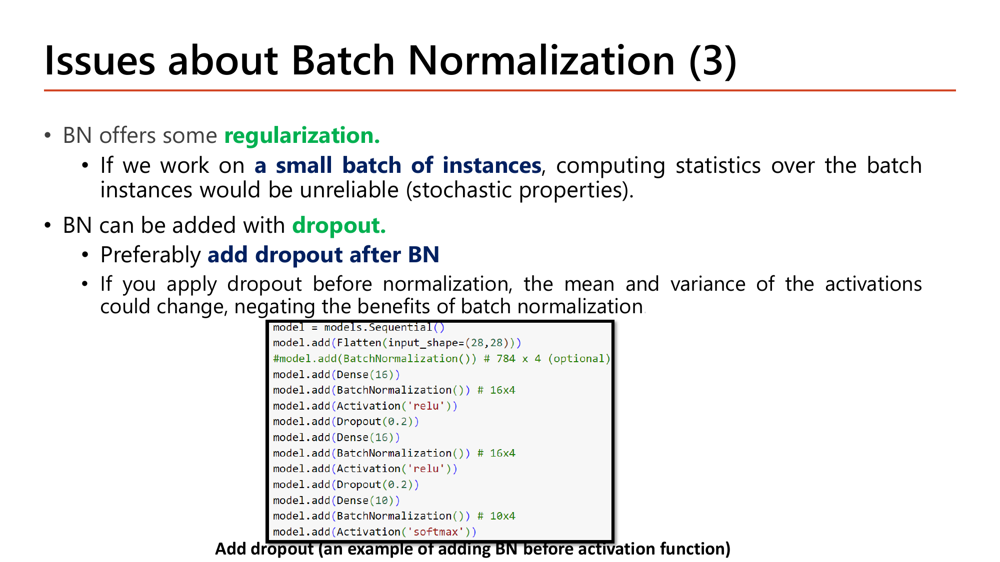
Slide: Issues about Batch Normalization (3) — BN กับ Dropout (Lecture5, p.17)
รูปแบบโค้ดในสไลด์หน้า 17: Dense(16) → BatchNormalization → Activation('relu') → Dropout(0.2) ซ้ำ 2 ชั้น แล้ว Dense(10) → BatchNormalization → Activation('softmax') — ลำดับ BN แล้ว activation แล้ว dropout ตามคำแนะนำ.
คำถาม 4 Batch Normalization
เพราะเหตุใด Batch Normalization ยังต้องมีขั้น "scale and shift" (γz_norm+β) ต่อจากขั้น normalize แทนที่จะหยุดแค่ normalize ให้ mean=0, variance=1?
เพื่อให้เครือข่ายเรียนรู้เองว่าจะคงการ normalize ไว้แค่ไหน ไม่ถูกบีบให้เหมือนกันทุก layer
เพราะขั้น normalize เพียงอย่างเดียวทำให้ค่า z กลายเป็นค่าลบทั้งหมดในทุกกรณีของการเทรน
เพราะกฎของ Keras กำหนดให้ทุก layer ต้องมีพารามิเตอร์ที่เรียนรู้ได้อย่างน้อยสองตัวเสมอ
เพราะขั้น normalize เพียงอย่างเดียวทำให้ gradient ไม่สามารถไหลย้อนกลับผ่าน layer นั้นได้อีก
4. Layer Normalization: เมื่อไม่อยากพึ่ง Mini-batch
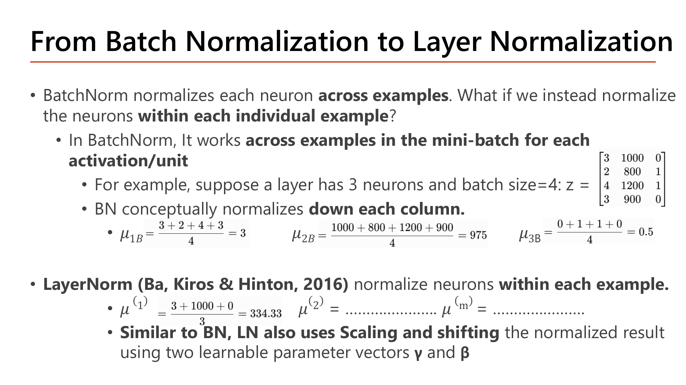
Slide: From Batch Normalization to Layer Normalization (Lecture5.pdf, p.18)
BN คำนวณ mean/variance "ไล่ตามคอลัมน์" (1 neuron ข้ามทุกตัวอย่างใน batch) ส่วน LayerNorm คำนวณ "ไล่ตามแถว" (ทุก neuron ในตัวอย่างเดียว ) — ไม่พึ่งตัวอย่างอื่นเลย. สูตรเดียวกับ BN เพียงแต่เปลี่ยนแกนที่เฉลี่ย.
คำนวณ: BN เทียบ LayerNorm บนข้อมูลเดียวกัน (batch 2 ตัวอย่าง × 4 neuron, ละ \(\epsilon,\gamma,\beta\))
\(Z = \begin{bmatrix}1&3&5&7\\2&2&6&6\end{bmatrix}\) (แถว = ตัวอย่าง, คอลัมน์ = neuron)
BN: เฉลี่ยตามคอลัมน์ (neuron 1 = [1, 2])
$$\mu = 1.5,\ \sigma^2 = 0.25\ \Rightarrow\ z_{\text{norm}} = \left[\tfrac{1-1.5}{0.5},\ \tfrac{2-1.5}{0.5}\right] = [-1,\ +1]$$LayerNorm: เฉลี่ยตามแถว (ตัวอย่างที่ 1 = [1,3,5,7])
$$\mu = 4,\ \sigma^2 = 5\ \Rightarrow\ z_{\text{norm}} = [-1.342,\ -0.447,\ 0.447,\ 1.342]$$LayerNorm ตัวอย่างที่ 2 ([2,2,6,6])
$$\mu = 4,\ \sigma^2 = 4\ \Rightarrow\ z_{\text{norm}} = [-1,\ -1,\ +1,\ +1]$$ถ้า batch มีตัวอย่างเดียว (batch size = 1)
BN: แต่ละ neuron มีค่าเดียว \(\Rightarrow z-\mu=0\) ทั้งหมด (ข้อมูลหาย); LayerNorm: ยังคำนวณจาก 4 neuron ในตัวอย่างนั้นได้ตามปกติ
ข้อดี (สไลด์หน้า 19 Why Layer Normalization? ): ไม่ขึ้นกับ batch size (ใช้ได้แม้ batch = 1); เสถียรสำหรับการเทรน Transformer ขนาดใหญ่ (ไม่พึ่งสถิติ batch ที่แกว่งหรือเปลี่ยนตลอด); พฤติกรรมเหมือนกันตอน train และ inference (ไม่ต้องเก็บ moving average). จึงเป็นมาตรฐานใน Transformer/LLM ส่วน BN ยังนิยมใน CNN.
กลไกที่ต้องอธิบายได้
ทำไมต้องมี
BN ต้องพึ่ง moving average เพราะ "หน่วยที่ normalize" (1 neuron ข้ามทุกตัวอย่าง) หายไปตอน test (เหลือตัวอย่างเดียว) แต่ LayerNorm normalize "ข้าม neuron ภายในตัวอย่างเดียว" ซึ่งมีครบทั้งตอน train และ test.
เปลี่ยนแล้วเกิดอะไร
layer ที่มี neuron แค่ 2 ตัว: mean/variance จาก 2 ค่า แม่นน้อยกว่า layer 512 neuron มาก — LayerNorm มีจุดอ่อนแบบเดียวกับ BN แต่ย้ายแกนมาเป็น "layer width เล็ก" แทน "batch size เล็ก".
เชื่อมกับ
BN และ LayerNorm มีจุดอ่อนทางสถิติเดียวกัน (ประมาณ mean/variance จากตัวอย่างน้อย) แค่แกนนับต่างกัน — batch ใหญ่เลือก BN, layer กว้างเลือก LayerNorm.
คำถาม 5 Layer vs Batch Norm
ข้อได้เปรียบหลักของ Layer Normalization เทียบกับ Batch Normalization คืออะไร?
LayerNorm ใช้ได้กับ CNN เท่านั้น ในขณะที่ BatchNorm ใช้ได้กับทุกสถาปัตยกรรม
LayerNorm ไม่มีพารามิเตอร์ γ, β ที่เรียนรู้ได้เลย ต่างจาก BatchNorm ที่มีทั้งสองตัว
LayerNorm ต้องใช้ batch size ที่ใหญ่กว่า BatchNorm มากเพื่อให้สถิติแม่นยำเพียงพอ
LayerNorm คำนวณสถิติจากภายใน 1 ตัวอย่างเดียว ไม่ต้องพึ่งตัวอย่างอื่นใน mini-batch เหมือน BatchNorm
5. Keras ในภาคปฏิบัติ: MNIST ตัวอย่างเต็มรูปแบบ
สไลด์หน้า 20–21: Keras คือ high-level API สำหรับสร้าง/เทรนโมเดล (พัฒนาโดย François Chollet รันบน TensorFlow, PyTorch หรือ JAX) และมีขั้นตอนมาตรฐาน 5 ขั้น:
โหลด/เตรียมข้อมูล
สร้างโมเดล
จำนวน layer, จำนวน node, activation
compile
เลือก cost function, optimizer, metric
เทรนด้วย fit()
ประเมินผลและทำนาย
สไลด์หน้า 22 เปิดด้วย Circle Dataset (โค้ดสั้น 4 layer: Dense(10, relu, he_normal) ×3 + Dense(1, sigmoid), Adam(learning_rate=0.03), fit(..., epochs=50, batch_size=150)) — โครงสร้างเดียวกับ Lesson 6 §6.
5.1 เตรียมข้อมูล MNIST (สไลด์หน้า 23–27)
MNIST = ภาพเลขเขียนมือ 60,000 ภาพสำหรับเทรน + 10,000 สำหรับ test ขนาด 28×28 พิกเซล, label 0–9.
คำนวณ: ขั้นเตรียมข้อมูล
flatten ภาพ 28×28 เป็นเวกเตอร์ (Dense รับเวกเตอร์เท่านั้น)
$$28\times28 = 784\ \text{features}\qquad(\text{shape }(60000,28,28)\to(60000,784))$$ปรับค่าพิกเซล 0–255 เป็น 0–1 ด้วยการหาร 255 (min-max scaling จาก Lesson 1 §4 ที่ min = 0, max = 255)
$$\frac{255}{255} = 1,\quad \frac{128}{255} = 0.502,\quad \frac{64}{255} = 0.251,\quad \frac{0}{255} = 0$$label เป็นเลขจำนวนเต็ม 0–9 (ไม่ใช่ one-hot)
เช่น y[:10] = [5 0 4 1 9 2 1 3 1 4] ⇒ ต้องใช้ loss แบบ sparse (§6)
5.2 นับพารามิเตอร์ของโมเดล (สไลด์หน้า 28–29)
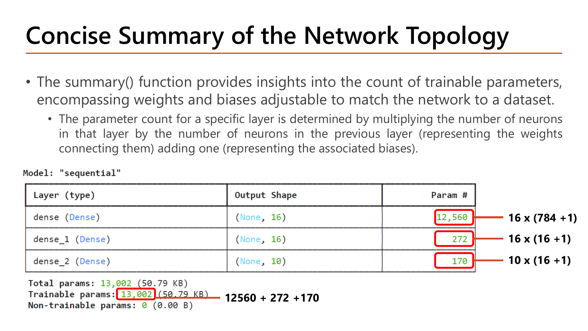
Slide: Concise Summary of the Network Topology — นับพารามิเตอร์จริงจาก model.summary() (Lecture5.pdf, p.29)
โมเดล 784→16→16→10 (สไลด์หน้า 28: Sequential + Dense(16, relu) ×2 + Dense(10, softmax)) นับด้วยกฎ \(s_l\times(s_{l-1}+1)\) จาก Lesson 3 §4:
คำนวณ: model.summary() ของ MNIST
Layer 1: 784 → 16
$$16\times(784+1) = 16\times785 = 12{,}560$$Layer 2: 16 → 16
$$16\times(16+1) = 272$$Layer 3 (output): 16 → 10
$$10\times(16+1) = 170$$รวม
$$12{,}560 + 272 + 170 = 13{,}002$$
13,002 พารามิเตอร์ (ตรงกับที่ Keras พิมพ์ทุกหลัก). ผิดที่พบบ่อย: ลืมบวก 1 (bias) ได้ \(16\times784 = 12{,}544\).
5.3 เทรนและนับ mini-batch (สไลด์หน้า 30–31)
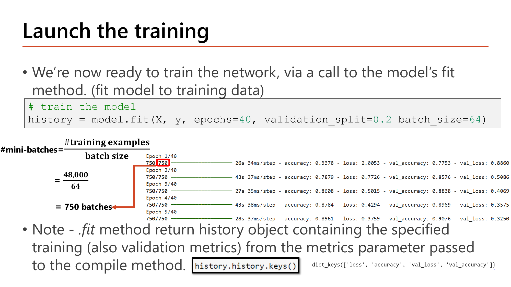
Slide: Launch the training — คำนวณจำนวน mini-batch ต่อ epoch (Lecture5.pdf, p.31)
สไลด์หน้า 30: compile(optimizer='adam', loss='sparse_categorical_crossentropy', metrics=['accuracy']) แล้วหน้า 31: model.fit(X, y, epochs=40, validation_split=0.2, batch_size=64).
คำนวณ: จำนวน mini-batch และจำนวนการอัปเดต \(\theta\)
แบ่ง validation ออกก่อน
$$60{,}000\times0.2 = 12{,}000\ (\text{validation}),\qquad 60{,}000-12{,}000 = 48{,}000\ (\text{train})$$mini-batch ต่อ epoch (สูตร Lesson 4 §3: \(\lceil m/B\rceil\))
$$\frac{48{,}000}{64} = 750$$อัปเดตทั้งหมด
$$750\times40\ \text{epoch} = 30{,}000\ \text{ครั้ง}$$
เมื่อ \(m\) หารด้วย \(B\) ไม่ลงตัวจะปัดขึ้น เช่น IMDB ในการบ้าน: \(25{,}000\times0.6 = 15{,}000\) แล้ว \(\lceil 15000/256\rceil = 59\) batch; ประเมินบน test 10,000 ตัวอย่างด้วย batch 32 ⇒ \(\lceil 10000/32\rceil = 313\) batch.
สไลด์หน้า 32–33: หลังเทรนพล็อต loss/accuracy ของ train และ validation เทียบ epoch (เห็น overfit เมื่อ val_loss เริ่มขึ้น) แล้ว model.evaluate(Xtest, ytest) และ model.predict(Xtest[0:1]) ได้เวกเตอร์ความน่าจะเป็น 10 ตัว — np.argmax ให้คลาสที่ทำนาย.
กลไกที่ต้องอธิบายได้
ทำไมต้องมี
การนับพารามิเตอร์/mini-batch ใน Keras ไม่ใช่ความรู้ใหม่ แต่คือสูตรเดิมจาก Lesson 3 (ขนาด \(\theta\)) และ Lesson 4 (batch size) ที่ใส่ตัวเลขจริง — Keras แค่ implement สูตรที่เรียนมาทั้งวิชา ต้องมั่นใจสูตรมือก่อนแล้วโค้ดจะตรง.
เปลี่ยนแล้วเกิดอะไร
โมเดล 784→32→10 (ตัด hidden หนึ่งชั้น แต่ให้ชั้นที่เหลือกว้างขึ้น): \(32\times785 = 25{,}120\) + \(10\times33 = 330\) = 25,450 — มากกว่า 13,002 เกือบ 2 เท่าทั้งที่ตัด layer ออก เพราะ layer แรกที่คูณกับ 784 อยู่แล้วยิ่งกว้างยิ่งโตเร็ว.
เชื่อมกับ
ความกว้างกับความลึกส่งผลต่อจำนวนพารามิเตอร์คนละแบบ (Lesson 3 §7, Lesson 4 §2) และตัวเลข "Optimizer params" ใน summary (Lesson 6 §3).
คำถาม 6 Keras Parameter Count
โมเดล Keras มีโครงสร้าง 784→16→16→10 (Dense ทุก layer) จำนวนพารามิเตอร์ของ layer แรก (784→16) เท่ากับเท่าไหร่ ตามกฎ #node ปัจจุบัน × (#node ก่อนหน้า+1)?
784 เพราะเท่ากับจำนวน input feature ทั้งหมดของภาพ MNIST หนึ่งภาพพอดี
12,544 เพราะคำนวณจาก 16×784 โดยตรง ไม่ต้องบวกเทอม bias เข้าไปด้วย
12,560 เพราะคำนวณจาก 16×(784+1) = 16×785 ซึ่งรวมเทอม bias ของแต่ละ node ด้วย
16 เพราะเท่ากับจำนวน node ของ layer นั้นเพียงอย่างเดียวโดยไม่คูณกับสิ่งใด
คำถาม 7 Mini-batch Count
เรียก model.fit(X,y,validation_split=0.2,batch_size=64) บนข้อมูล MNIST 60,000 ตัวอย่าง จำนวน mini-batch ต่อ epoch เท่ากับเท่าไหร่?
938 batch เพราะคำนวณจาก 60,000 หารด้วย 64 โดยตรง ไม่ต้องหักส่วน validation ออกก่อน
64 batch เพราะเท่ากับค่า batch_size ที่กำหนดไว้ตรงๆในโค้ดโดยไม่ต้องคำนวณเพิ่ม
750 batch เพราะเหลือ training จริง 48,000 ตัวอย่าง (หัก validation 20% แล้ว) หารด้วย 64 เท่ากับ 750
48,000 batch เพราะเท่ากับจำนวน training example ที่เหลือหลังหัก validation ออกไปแล้ว
6. Compile Options และ Softmax Layer
Slide: More Compile Options — ตาราง Last-layer activation กับ Loss (Lecture5, p.34)
กฎที่ต้องจับให้ถูก: activation ของ layer สุดท้ายต้องสอดคล้อง กับ loss และชนิดของ label — ตารางในสไลด์สรุปเป็น:
ชนิดปัญหา activation ของ layer สุดท้าย loss Binary classification sigmoid binary_crossentropy Multiclass, single-label softmax categorical_crossentropy Multiclass, multilabel sigmoid binary_crossentropy Regression ค่าอะไรก็ได้ ไม่ใช้ (linear) mse Regression ค่า 0–1 sigmoid mse หรือ binary_crossentropy
เมื่อ label เป็นจำนวนเต็มเดี่ยว (MNIST: 0–9) และแต่ละภาพอยู่ในคลาสเดียว ใช้ sparse_categorical_crossentropy แทน categorical_crossentropy (ซึ่งต้องการ one-hot).
คำนวณ: sparse กับ categorical ให้ loss เท่ากัน (label จริง \(y=3\) จาก 10 คลาส)
softmax ให้ความน่าจะเป็นของคลาส 3 เท่ากับ \(\hat y_3 = 0.7\)
categorical (one-hot \(y=[0,0,0,1,0,0,0,0,0,0]\))
$$-\sum_k y_k\ln\hat y_k = -(1\cdot\ln0.7) = 0.357$$sparse (เก็บแค่ index 3)
$$-\ln\hat y_{3} = -\ln0.7 = 0.357$$พื้นที่เก็บ label 60,000 ตัวอย่าง
$$\text{sparse}: 60{,}000\ \text{ตัวเลข},\qquad \text{one-hot}: 60{,}000\times10 = 600{,}000\ \text{ตัวเลข}$$
loss เท่ากัน (สไลด์: Final Loss Value = Identical) ต่างกันแค่วิธีเก็บ \(y\) — sparse ประหยัดหน่วยความจำ ยิ่งจำนวนคลาส \(K\) มาก ยิ่งต่างมาก (\(K\) เท่า).
Input, Flatten, Softmax (สไลด์หน้า 35): อีกวิธีสร้างโมเดลแบบ explicit: Input = จุดเริ่มต้นบอก shape ของข้อมูล 1 ตัว; Flatten แปลงภาพ (28,28) เป็นเวกเตอร์ 784 (ถ้าใช้ Flatten ไม่ต้อง reshape ข้อมูลเอง); Softmax คืนคะแนนความน่าจะเป็น 10 ตัวที่รวมเป็น 1. สไลด์หน้า 36: แบ่งข้อมูลด้วย train_test_split(X, y, test_size=0.2) เมื่อชุดข้อมูลยังไม่ถูกแบ่ง หรือส่ง validation_data=(Xval, yval) เมื่อแบ่งไว้แล้ว.
กลไกที่ต้องอธิบายได้
ทำไมต้องมี
sparse กับ categorical ให้ loss เท่ากันทุกตัวเลข เพราะคำนวณสูตรเดียวกัน (\(-\sum y_k\ln\hat y_k\)) ต่างกันแค่วิธีเก็บ \(y\): one-hot เก็บเป็นเวกเตอร์ sparse เก็บเป็น index เดียว Keras แปลงเป็น one-hot ข้างในให้เอง.
เปลี่ยนแล้วเกิดอะไร
label จริง \(y=3\): sparse เก็บ "3" ส่วน one-hot เก็บ 10 ตัวเลข — 60,000 ตัวอย่าง 60,000 เทียบ 600,000 (10 เท่า เพราะ \(K=10\)).
เชื่อมกับ
cross-entropy ตัวเดียวกับ Lesson 1 §8 และ Lesson 3 §6 (softmax + cross-entropy ⇒ \(\delta=a-y\)).
คำถาม 8 Sparse Categorical Crossentropy
เพราะเหตุใดจึงใช้ loss="sparse_categorical_crossentropy" กับ label ของ MNIST แทน "categorical_crossentropy"?
เพราะ sparse_categorical_crossentropy ให้ค่า accuracy ที่สูงกว่าเสมอไม่ว่า dataset จะเป็นแบบใด
เพราะ label ของ MNIST เป็น integer เดี่ยว (0-9) ไม่ใช่ one-hot vector จึงไม่ต้องแปลงข้อมูลก่อนใช้งาน
เพราะ categorical_crossentropy ใช้ไม่ได้เลยกับโมเดลที่มี Softmax layer อยู่ท้ายสุด
เพราะ sparse_categorical_crossentropy ไม่ต้องใช้ Softmax activation ที่ output layer เลย
7. Overcome Overfitting ในโค้ดจริง
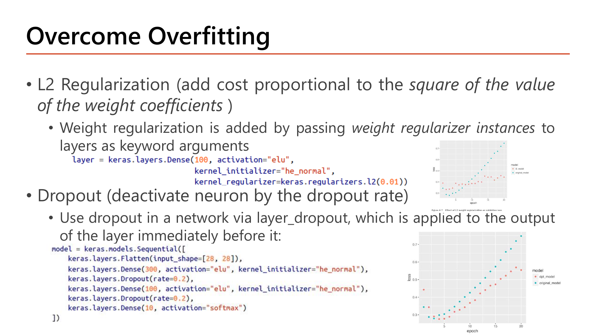
Slide: Overcome Overfitting — L2 และ Dropout ใน Keras (Lecture5, p.38)
สไลด์ปิดท้ายแปล L2 และ dropout (Lesson 4 §6) เป็นโค้ด:
L2: ส่ง regularizer เข้าอาร์กิวเมนต์ของ layer: Dense(100, activation="elu", kernel_initializer="he_normal", kernel_regularizer=keras.regularizers.l2(0.01)) — เพิ่ม \(0.01\sum\theta^2\) เข้า cost ของ layer นั้น (Keras ไม่หารด้วย \(m\); ไม่รวม bias)Dropout: เพิ่ม keras.layers.Dropout(rate=0.2) เป็น layer แยก ซึ่งใช้กับ output ของ layer ก่อนหน้ามัน
คำนวณ: "rate" ของ Keras ไม่ใช่ keep_prob
Dropout(rate=0.2)
$$\text{ปิด }20\%\ \Rightarrow\ \text{keep\_prob} = 1-0.2 = 0.8,\quad \text{ตัวคูณชดเชย} = \frac{1}{0.8}=1.25$$Dropout(0.6) (ที่ใช้ในการบ้าน IMDB)
$$\text{keep\_prob} = 0.4,\quad \text{ตัวคูณ} = \frac{1}{0.4} = 2.5$$
ระวังสับสนกับ keep_prob ในสไลด์ Lecture 4 (ความน่าจะเป็นที่เก็บ node) — Keras ใช้ rate = สัดส่วนที่ปิด . ตอน predict/evaluate Keras ปิด dropout ให้เอง.
สไลด์หน้า 37 (การบ้าน): จำแนก review หนัง IMDB 50,000 ตัวอย่าง (train 25,000 / test 25,000) เป็น positive/negative — โครงสร้างเดียวกับ MNIST แต่ output เป็น sigmoid 1 node + binary_crossentropy.
กลไกที่ต้องอธิบายได้
ทำไมต้องมี
โค้ดบรรทัดเดียว (kernel_regularizer, Dropout) แทนสูตรทั้งหมดได้เพราะ Keras แยก "สถาปัตยกรรม" ออกจาก "พฤติกรรมตอนเทรน" — ผู้ใช้แค่ประกาศเจตนา แล้ว autodiff (Lesson 3 §4) หาอนุพันธ์ของเทอมปรับให้เอง.
เปลี่ยนแล้วเกิดอะไร
ใส่ทั้ง \(\ell_2\) และ Dropout(0.5) ใน layer เดียวกันได้ ไม่ขัดแย้ง — คนละกลไก (L2 บีบขนาด \(\theta\) ทุก step, Dropout สุ่มปิด node ตอน forward) นิยมใช้คู่กันเพื่อลด overfit จากสองมุม.
เชื่อมกับ
Lesson 4 §6 (Max-Norm/Dropout/L2 แก้คนละมุม) — และ Lesson 6 ที่ให้ tuner หาค่า dropout/\(\lambda\) ที่เหมาะ.
คำถาม 9 Gradient Clipping
Gradient Clipping (การตัดค่า gradient ไม่ให้เกิน threshold ก่อน update) เป็นวิธีแก้ปัญหาใดเป็นหลัก?
แก้ปัญหา Overfitting โดยลดความซับซ้อนของโมเดลลงโดยตรงในทุก layer
แก้ปัญหา Exploding Gradient โดยจำกัดขนาด gradient ไม่ให้ใหญ่จนอัปเดตพารามิเตอร์แกว่งรุนแรง
แก้ปัญหา Vanishing Gradient โดยขยายขนาดของ gradient ที่เล็กเกินไปให้ใหญ่ขึ้น
แก้ปัญหาการเลือก Batch Size ที่ไม่เหมาะสมกับจำนวนข้อมูลที่มีอยู่ในการเทรน
คำถาม 10 Batch Norm Train vs Test
ทำไม Batch Normalization ต้องใช้ moving average ของ μ_B, σ_B² (ที่สะสมมาตอนเทรน) แทนการคำนวณจาก batch จริงตอน test?
เพราะกฎของ Keras บังคับให้ทุกโมเดลต้องใช้ moving average เสมอไม่ว่ากรณีใด
เพราะ γ และ β ไม่สามารถถูกเรียกใช้ได้อีกหลังจากขั้นตอนการเทรนเสร็จสิ้นแล้ว
เพราะการคำนวณจาก batch จริงตอน test ใช้เวลานานกว่าการเทรนทั้งโมเดลใหม่อีกครั้ง
เพราะตอน test อาจมีแค่ 1 ตัวอย่าง ไม่มี mini-batch ให้คำนวณค่าเฉลี่ย/variance ที่น่าเชื่อถือ
ชัยชนะของบทเรียนนี้
คุณควรอธิบายได้ว่าทำไม chain rule ที่ยาวทำให้เกิด vanishing/exploding gradient (พร้อมตัวเลข \(0.25^{10}\), \(0.9^{50}\)) และ clip gradient ได้, พิสูจน์ได้ว่า zero init ทำให้ node เหมือนกันตลอดกาล และคำนวณ \(\operatorname{Var}(z)=n\operatorname{Var}(\theta)\) พร้อมที่มาของ He/Xavier/LeCun, คำนวณ BatchNorm และ LayerNorm ด้วยตัวเลข (รวมนับพารามิเตอร์ \(4n\) ต่อ BN layer และ train vs test), และคำนวณพารามิเตอร์/mini-batch/loss ของโมเดล Keras (\(13{,}002\); \(750\); sparse vs categorical) — ครบเนื้อหา Lecture 1–5 แล้ว บทถัดไป (Lesson 6) ต่อด้วยเครื่องมือช่วยเทรนและการจูน hyperparameter.
ภาคผนวก: Slide ทั้งหมดใน Lecture5.pdf (38 หน้า) — เช็คว่าอ่านครบ
หน้า เนื้อหา สถานะ 1 Vanishing and Exploding Gradients — ที่มาจาก chain rule ✓ หัวข้อ 1 (มีรูป) 2 Activation Function — Sigmoid saturation ✓ หัวข้อ 1 (มีรูป) 3 Activation Function (2) — ReLU กับ Gradient Clipping ✓ หัวข้อ 1 (อธิบายในเนื้อหา) 4 Weight Initialization — เกริ่นภาพรวม etc — เกริ่นก่อนหัวข้อ 2 5 The Problem of Random Initialization — คำนวณ mean, variance ✓ หัวข้อ 2 (มีรูป, คำนวณเต็ม) 6 Weight initialization Techniques — LeCun/Xavier/He ✓ หัวข้อ 2 (มีรูป) 7 Experiments — เปรียบเทียบ Zero/Random/He Init etc — ผลทดลองเชิงคุณภาพ 8 Issues about Weight Initialization — ข้อจำกัด etc — ข้อจำกัดเสริม (init ช่วยได้แค่รอบแรก) 9 Why Normalization helps Optimization — เกริ่นก่อน BN etc — เกริ่นก่อนหัวข้อ 3 10–11 Batch Normalization — ภาพรวมโครงสร้าง etc — เกริ่นก่อนสูตรเต็มหน้า 12 12 Batch Normalization (BN) — สูตรเต็ม ✓ หัวข้อ 3 (มีรูป) 13–14 Normalize z (pre-activation), Normalize a (post-activation) etc — ตัวเลือกตำแหน่งวาง BN สองแบบ 15 Issues about Batch Normalization — train/test ✓ หัวข้อ 3 (อธิบายในเนื้อหา) 16–17 Issues about Batch Normalization (2)-(3) — ข้อดีเสริม, dropout ร่วมกับ BN etc — ข้อดีเสริมของ BN 18 From Batch Normalization to Layer Normalization ✓ หัวข้อ 4 (มีรูป) 19 Why Layer Normalization? — เหตุผลเลือกใช้ ✓ หัวข้อ 4 (อธิบายในเนื้อหา) 20–21 Keras API, Typical Keras Workflow ✓ หัวข้อ 5 (เกริ่น 5 ขั้นตอน) 22 Begin with Circle Dataset — ตัวอย่างโค้ดสั้น etc — ตัวอย่างประกอบก่อน MNIST 23 Understand Core Keras APIs via Examples — เกริ่น MNIST etc — เกริ่นก่อนตัวอย่างเต็ม 24–27 Loading MNIST, Data Exploration, Data Preparation, Preparing Labels etc — ขั้นเตรียมข้อมูล (ไม่มีคำนวณใหม่) 28 Build the Model with Sequential API etc — วิธีสร้างโมเดล (โครงสร้างเดียวกับหัวข้อ 5) 29 Concise Summary of the Network Topology — นับพารามิเตอร์ ✓ หัวข้อ 5 (มีรูป, คำนวณเต็ม) 30 Compile the model etc — ขั้น compile (อธิบายในหัวข้อ 6) 31 Launch the training — คำนวณจำนวน mini-batch ✓ หัวข้อ 5 (มีรูป, คำนวณเต็ม) 32–33 Plot the Performance, Check the Model on the Test Set etc — ขั้นประเมินผล (ไม่มีคำนวณใหม่) 34 More Compile Options — sparse_categorical_crossentropy ✓ หัวข้อ 6 35 Using Input(), Flatten() and Softmax() ✓ หัวข้อ 6 (อธิบายในเนื้อหา) 36 Other Ways of Splitting the Data — train_test_split etc — ทางเลือกแบ่งข้อมูลเสริม 37 Homework: Classify Movies Reviews (IMDB dataset) etc — การบ้าน ไม่ใช่เนื้อหาสอบ 38 Overcome Overfitting — L2/Dropout ในโค้ด Keras จริง ✓ หัวข้อ 7
สงสัยตรงไหน ถามได้เลยในแชท — ผมเป็นผู้สอนของคุณ ถามซ้ำได้ ถามลึกได้ ไม่ต้องเกรงใจ.
← Lesson 4: Deep Networks & Optimizers Lesson 6: Callbacks & Tuning →
![Slide More Compile Options: an example Adam optimizer configured via a Python object, a table of common last-layer activation and loss function per problem type (binary classification: sigmoid with binary_crossentropy; multiclass single-label: softmax with categorical_crossentropy; multiclass multilabel: sigmoid with binary_crossentropy; regression to arbitrary values: none with mse; regression to values between 0 and 1: sigmoid with mse or binary_crossentropy) and a comparison of categorical versus sparse categorical crossentropy where the true label is a one-hot vector versus an integer index, the loss value is identical and sparse is more memory efficient](../assets/slides/dl5-p34-compile-options-loss-table.png)